Contents
- 2.1 Extract and visualize four individual views of your captured light field.
- Interactive views
- 2.2 Create the EPIs
- EPI 1: Note the objects: purple stick, red/yellow petals, wooden stick
- EPI 2: note the red vine, yellow petal
- EPI 3: note the text
- From these images, I conclude that the text in the background has a slope of about -0.4,
% For Computational Photography, Project 06, P8146 % Task 2 % % see html/ for a compiled version of this. x = load('IMG_0099__Decoded.LFToolbox.mat'); lf = 2 * x.LF; % 2 * for contrast enhancement
2.1 Extract and visualize four individual views of your captured light field.
I show four angularly parametrized views and one spatially parametrized view ('one point on the focal plane, observed by different virtual cameras')
Note that the viewpoint is slightly different in each of these images. Also note the boundary artifacts near the border of the image, which arise because I use pixels near the border of the lenses.
close all imshow_in_figure(squeeze(lf(7,3,:,:,1:3)), 'Angular view 1'); % 7,3 instead of 7,1 because that one is unreliable imshow_in_figure(squeeze(lf(1,7,:,:,1:3)), 'Angular view 2'); imshow_in_figure(squeeze(lf(7,15,:,:,1:3)), 'Angular view 3'); imshow_in_figure(squeeze(lf(15,7,:,:,1:3)), 'Angular view 4'); imshow_in_figure(squeeze(lf(:,:,198,432,1:3)), 'Spatial view');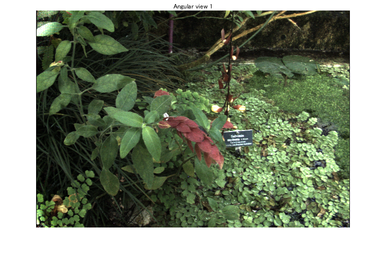 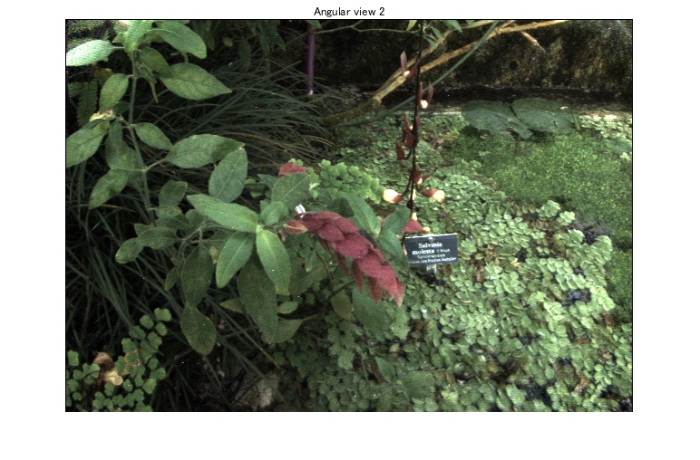 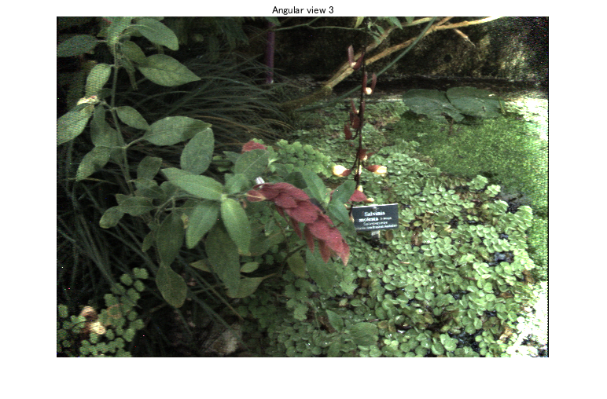 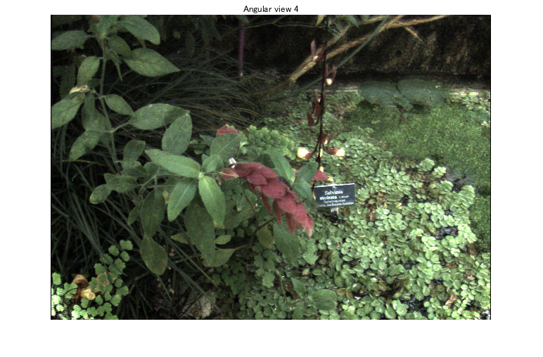
Interactive views
This is fun to play with
close all
LFDispMousePan(lf)
Click and drag to shift perspective
ans =
Figure の (LFDisplay) のプロパティ:
Number: 1
Name: ''
Color: [0.9400 0.9400 0.9400]
Position: [487 233 626 434]
Units: 'pixels'
GET を使用してすべてのプロパティを表示
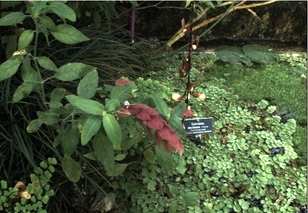 2.2 Create the EPIs
Note that the angular parameter runs from left-to right, the spatial parameter downwards in the following images.
We pan the camera along all horizontal camera positions in the light field There are 15 of these, therefore the EPI is 15 pixels high.
We note that the slope of points in the scene in this image depends on their depth (parallax).
EPI 1: Note the objects: purple stick, red/yellow petals, wooden stick
y = 61; CP06_show_horizontal_epi(lf, y);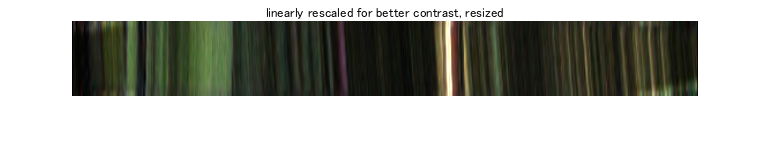 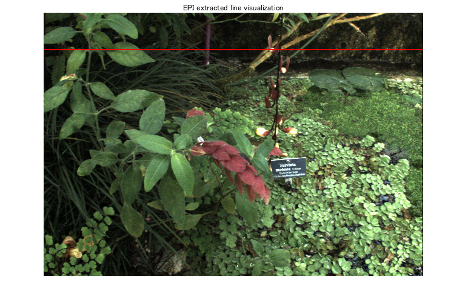
EPI 2: note the red vine, yellow petal
y = 219; CP06_show_horizontal_epi(lf, y);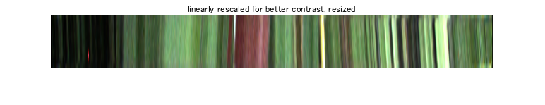 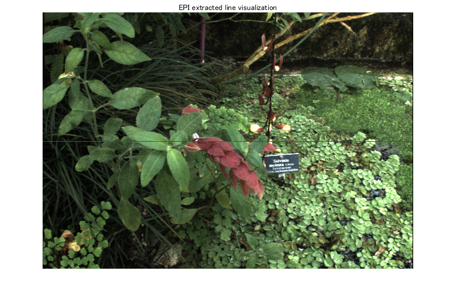
EPI 3: note the text
y = 257; CP06_show_horizontal_epi(lf, y);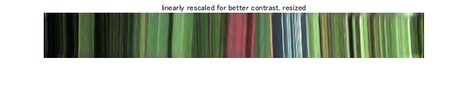 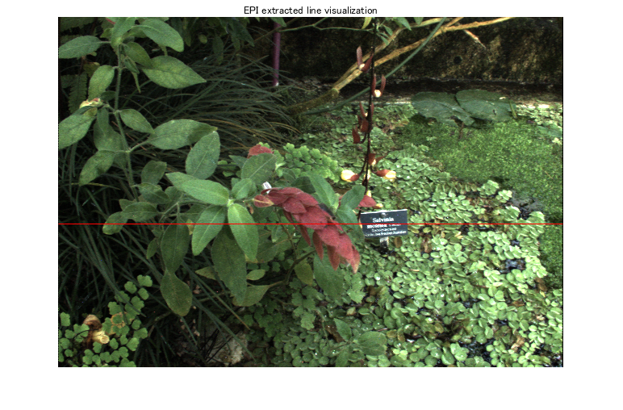
From these images, I conclude that the text in the background has a slope of about -0.4,
the vine in the foreground has slope about 0.4:
For every 5 pixels up, a pixel belonging to these objects goes 2 to the left/right.
I will use this in the refocusing.